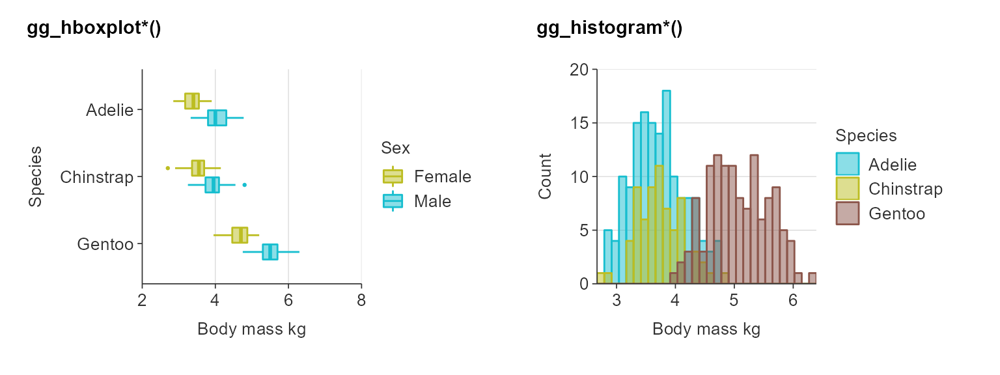
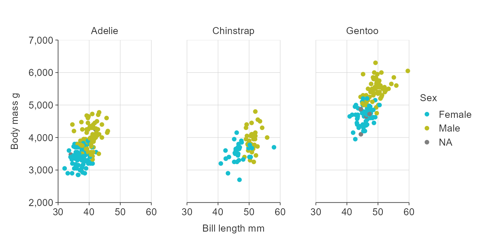
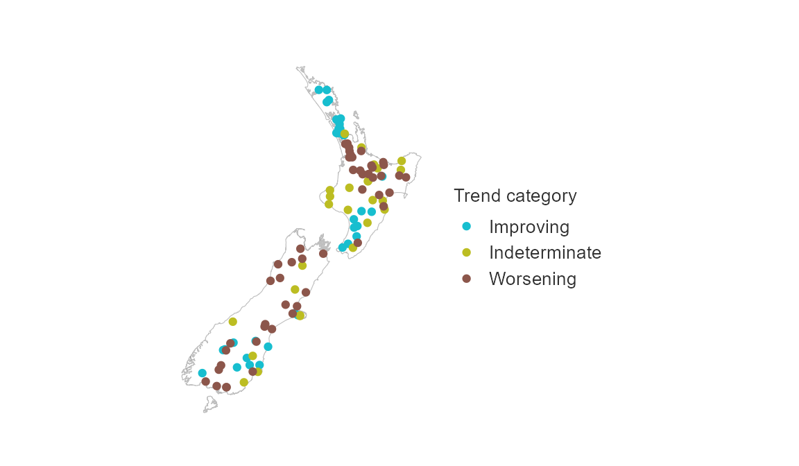

Purpose
simplevis is a package of wrapper functions that aim to make ggplot2 and leaflet visualisation easier and quicker for users.
simplevis emphasises cognitive ease and speed, and subsequently some flexibility is lost compared to the underlying fantastic ggplot2 and leaflet packages.
But the gain in cognitive ease and speed will be valuable for many users in many situations.
Overview
simplevis provides the following families of ggplot2 visualisation:
Graph:
- horizontal bar (
gg_hbar) - vertical bar (
gg_vbar) - line plot (
gg_line) - scatter graph (
gg_point) - boxplot (
gg_boxplot)
Map:
- sf (
gg_sf)
Each visualisation family has a family of generally 4 functions.
The function name specifies whether or not a ggplot is to be coloured by a variable, facetted by a variable, or neither or both of these. Colouring by a variable means that different values of a selected variable are to have different colours. Facetting means different values of a selected variable are to have there own mini-plot, and these are to be placed alongside each other.
Each ggplot2 wrapper family follows the structure as below:
-
gg_hbar(): a horizontal bar graph. -
gg_hbar_col(): a horizontal bar graph that is coloured by a variable. -
gg_hbar_facet(): a facetted horizontal bar graph. -
gg_hbar_col_facet()a facetted horizontal bar graph that is coloured by a variable.
For different types of graph, just replace gg_hbar with gg_line, gg_point, gg_vbar, gg_boxplot or gg_sf.
In general, required arguments (i.e. specifications) to functions are:
data-
x_var(not required forsf) -
y_var(not required forsf)
If you are using a _col or _col_facet function:
col_var
If you are using a _facet or _col_facet function:
facet_var
It is always recommended to add a title, x_title and y_title too.
Plots not coloured by a variable.
Identify the function that you need, then provide the data, an x_var and a y_var (unless of the gg_sf family).
plot_data <- ggplot2::diamonds %>% slice_sample(prop = 0.05) %>% tibble::as_tibble() plot_data #> # A tibble: 2,697 x 10 #> carat cut color clarity depth table price x y z #> <dbl> <ord> <ord> <ord> <dbl> <dbl> <int> <dbl> <dbl> <dbl> #> 1 0.44 Ideal G SI2 61.1 55 694 4.93 4.95 3.02 #> 2 1.09 Ideal I VS1 61.8 55 6225 6.59 6.62 4.08 #> 3 2.03 Good G SI2 62.7 65 13621 8.17 7.92 5.06 #> 4 0.43 Good F SI1 63.8 57 739 4.8 4.82 3.07 #> 5 0.7 Fair G VS2 57.3 63 2273 5.78 5.84 3.33 #> 6 2.02 Ideal J SI1 62.4 56 12591 8.03 8.19 5.06 #> 7 0.92 Premium F SI1 61.8 59 3967 6.25 6.21 3.85 #> 8 1.01 Ideal G VS1 62.9 57 6176 6.43 6.39 4.03 #> 9 0.28 Very Good D VS1 61.7 58 487 4.19 4.24 2.6 #> 10 0.76 Very Good E SI1 63.2 57 2613 5.8 5.75 3.65 #> # … with 2,687 more rows gg_point(plot_data, carat, price)

plot_data <- ggplot2::diamonds %>% group_by(cut) %>% summarise(average_price = mean(price)) %>% mutate(average_price = average_price / 1000) %>% mutate(cut = stringr::str_to_sentence(cut)) %>% tibble::as_tibble() plot_data #> # A tibble: 5 x 2 #> cut average_price #> <chr> <dbl> #> 1 Fair 4.36 #> 2 Good 3.93 #> 3 Very good 3.98 #> 4 Premium 4.58 #> 5 Ideal 3.46 gg_hbar(plot_data, average_price, cut)

plot_data <- storms %>% group_by(year) %>% summarise(average_wind = mean(wind)) %>% tibble::as_tibble() plot_data #> # A tibble: 41 x 2 #> year average_wind #> <dbl> <dbl> #> 1 1975 50.9 #> 2 1976 59.9 #> 3 1977 54.0 #> 4 1978 40.5 #> 5 1979 48.7 #> 6 1980 53.7 #> 7 1981 56.6 #> 8 1982 49.5 #> 9 1983 47.0 #> 10 1984 51.4 #> # … with 31 more rows gg_vbar(plot_data, year, average_wind)

plot_data <- storms %>% group_by(year) %>% summarise(wind = mean(wind)) %>% tibble::as_tibble() plot_data #> # A tibble: 41 x 2 #> year wind #> <dbl> <dbl> #> 1 1975 50.9 #> 2 1976 59.9 #> 3 1977 54.0 #> 4 1978 40.5 #> 5 1979 48.7 #> 6 1980 53.7 #> 7 1981 56.6 #> 8 1982 49.5 #> 9 1983 47.0 #> 10 1984 51.4 #> # … with 31 more rows gg_line(plot_data, year, y_var = wind)

Note the gg_boxplot functions transform the data to boxplot statistics by default.
plot_data <- iris %>% mutate(Species = stringr::str_to_sentence(Species)) %>% tibble::as_tibble() plot_data #> # A tibble: 150 x 5 #> Sepal.Length Sepal.Width Petal.Length Petal.Width Species #> <dbl> <dbl> <dbl> <dbl> <chr> #> 1 5.1 3.5 1.4 0.2 Setosa #> 2 4.9 3 1.4 0.2 Setosa #> 3 4.7 3.2 1.3 0.2 Setosa #> 4 4.6 3.1 1.5 0.2 Setosa #> 5 5 3.6 1.4 0.2 Setosa #> 6 5.4 3.9 1.7 0.4 Setosa #> 7 4.6 3.4 1.4 0.3 Setosa #> 8 5 3.4 1.5 0.2 Setosa #> 9 4.4 2.9 1.4 0.2 Setosa #> 10 4.9 3.1 1.5 0.1 Setosa #> # … with 140 more rows gg_boxplot(plot_data, Species, Petal.Length)

Plots coloured by a variable
To colour by a variable, use a _col function (e.g. gg_hbar_col). Add a col_var variable in addition.
plot_data <- ggplot2::diamonds %>% group_by(cut, clarity) %>% summarise(average_price = mean(price)) %>% mutate(average_price = average_price / 1000) %>% mutate(cut = stringr::str_to_sentence(cut)) %>% tibble::as_tibble() plot_data #> # A tibble: 40 x 3 #> cut clarity average_price #> <chr> <ord> <dbl> #> 1 Fair I1 3.70 #> 2 Fair SI2 5.17 #> 3 Fair SI1 4.21 #> 4 Fair VS2 4.17 #> 5 Fair VS1 4.17 #> 6 Fair VVS2 3.35 #> 7 Fair VVS1 3.87 #> 8 Fair IF 1.91 #> 9 Good I1 3.60 #> 10 Good SI2 4.58 #> # … with 30 more rows gg_hbar_col(plot_data, average_price, cut, clarity)

Plots facetted by a variable
To facet by a variable, use a _facet function.
plot_data <- ggplot2::diamonds %>% mutate(cut = stringr::str_to_sentence(cut)) %>% group_by(cut, clarity) %>% summarise(average_price = mean(price)) %>% mutate(average_price = average_price / 1000) %>% tibble::as_tibble() plot_data #> # A tibble: 40 x 3 #> cut clarity average_price #> <chr> <ord> <dbl> #> 1 Fair I1 3.70 #> 2 Fair SI2 5.17 #> 3 Fair SI1 4.21 #> 4 Fair VS2 4.17 #> 5 Fair VS1 4.17 #> 6 Fair VVS2 3.35 #> 7 Fair VVS1 3.87 #> 8 Fair IF 1.91 #> 9 Good I1 3.60 #> 10 Good SI2 4.58 #> # … with 30 more rows gg_hbar_facet(plot_data, average_price, cut, clarity)

Plots coloured by a variable and facetted by a variable
facet by a variable, use a _col_facet function.
plot_data <- ggplot2::diamonds %>% mutate(cut = stringr::str_to_sentence(cut)) %>% group_by(cut, clarity, color) %>% summarise(average_price = mean(price)) %>% mutate(average_price = round(average_price / 1000, 1)) gg_hbar_col_facet(plot_data, average_price, color, clarity, cut)

sf ggplot maps
simplevis provides simple feature (sf) maps (i.e. maps with point, line or polygon features).
These functions work in the same way as the ggplot2 graph functions, but with the following key differences:
- Data must be an
sfobject - Data must be of
POINT/MULTIPOINT,LINESTRING/MULTILINESTRING, orPOLYGON/MULTIPOLYGONgeometry type - Data must have a coordinate reference system (CRS) defined
- No
x_varandy_varvariables are required - Borders can added to maps by providing an
sfobject to thebordersargument.
example_sf_point #> Simple feature collection with 112 features and 3 fields #> Geometry type: POINT #> Dimension: XY #> Bounding box: xmin: 1175354 ymin: 4853914 xmax: 2025939 ymax: 6096100 #> CRS: EPSG:2193 #> First 10 features: #> site_id median trend_category geometry #> 1 ARC-00001 0.0140 Improving POINT (1735609 5916179) #> 2 ARC-00008 0.0610 Improving POINT (1753479 5976281) #> 3 ARC-00013 0.1310 Improving POINT (1742066 5915382) #> 4 ARC-00014 0.9900 Improving POINT (1764285 5907017) #> 5 ARC-00015 1.0300 Improving POINT (1767401 5907336) #> 6 ARC-00016 0.2980 Improving POINT (1768314 5908177) #> 7 ARC-00017 0.3550 Improving POINT (1751305 5933319) #> 8 ARC-00018 0.7350 Indeterminate POINT (1769952 5912814) #> 9 ARC-00019 0.5000 Improving POINT (1769452 5910614) #> 10 ARC-00026 0.1295 Improving POINT (1748608 5953465) gg_sf(example_sf_point, size_point = 0.25)

nz #> Simple feature collection with 7 features and 1 field #> Geometry type: MULTIPOLYGON #> Dimension: XY #> Bounding box: xmin: 166.4262 ymin: -47.28988 xmax: 178.5505 ymax: -34.39357 #> CRS: EPSG:4326 #> name geometry #> 1 South Island or Te Waipounamu MULTIPOLYGON (((166.5461 -4... #> 2 North Island or Te Ika-a-Maui MULTIPOLYGON (((173.014 -34... #> 3 Stewart Island/Rakiura MULTIPOLYGON (((167.8694 -4... #> 4 Great Barrier Island (Aotea Island) MULTIPOLYGON (((175.3966 -3... #> 5 Resolution Island MULTIPOLYGON (((166.6788 -4... #> 6 Rangitoto ke te tonga (D'Urville Island) MULTIPOLYGON (((173.9532 -4... #> 7 Secretary Island MULTIPOLYGON (((166.9634 -4... gg_sf(example_sf_point, borders = nz, size_point = 0.25)

example_sf_polygon #> Simple feature collection with 963 features and 2 fields #> Geometry type: MULTIPOLYGON #> Dimension: XY #> Bounding box: xmin: 1090000 ymin: 4748153 xmax: 2089541 ymax: 6194182 #> CRS: EPSG:2193 #> First 10 features: #> grid_id density geometry #> 1 12 0.000 MULTIPOLYGON (((1199950 481... #> 2 14 0.000 MULTIPOLYGON (((1249363 482... #> 3 28 110.454 MULTIPOLYGON (((1259922 485... #> 4 88 58.405 MULTIPOLYGON (((1219940 492... #> 5 89 62.744 MULTIPOLYGON (((1239931 492... #> 6 90 89.362 MULTIPOLYGON (((1259922 492... #> 7 91 6.112 MULTIPOLYGON (((1279913 492... #> 8 135 0.000 MULTIPOLYGON (((1149972 497... #> 9 151 0.000 MULTIPOLYGON (((1139977 499... #> 10 167 0.000 MULTIPOLYGON (((1149972 501... gg_sf_col(example_sf_polygon, col_var = density, borders = nz)

gg_sf_facet(example_sf_point, trend_category, borders = nz, size_point = 0.5)

gg_sf_col_facet(example_sf_point, col_var = trend_category, facet_var = trend_category, borders = nz, size_point = 0.5, pal = c("#4575B4", "#D3D3D3", "#D73027"), title = "Site trends, 1990\u201317")

ggplot supported variable classes
variable types supported by the different groups of functions are outlined below.
A stat of identity refers to the value being plotted as it is. A stat of boxplot refers to boxplot statistics being calculated from the data, and these plotted.
tibble::tribble( ~group, ~x_var, ~y_var, ~col_var, ~facet_var, ~stat, "vbar", "numeric, date or categorical", "numeric", "categorical or numeric", "categorical", "identity", "hbar", "numeric", "categorical", "categorical or numeric", "categorical", "identity", "line", "numeric, date or categorical", "numeric", "categorical or numeric", "categorical", "identity", "point", "numeric, date or categorical", "numeric", "categorical or numeric", "categorical", "identity", "boxplot", "numeric, date or categorical", "numeric", "categorical", "categorical", "boxplot or identity", "sf", NA, NA, "categorical or numeric", "categorical", "identity", ) %>% DT::datatable()
ggplotly interactive html graphs and maps
All ggplot objects can be converted into interactive html objects using ggplotly. Simply wrap the plot object in plotly::ggplotly as follows:
For further information on how to use ggplotly with simplevis, see the ggplotly article
sf leaflet html interactive maps
simplevis also provides wrapper functions for sf leaflet html interactive maps.
These differ from ggplotly interactive plots in that they provide basemaps and zoom functionality. However, they do not support facetting.
A leaflet_sf and leaflet_sf_col function are provided.
They work in essentially the same way as the ggplot2 non-facetted sf functions. Arguments have been aligned with simplevis ggplot wrapping functions (e.g. size_point = radius, line_size = weight, alpha = fillOpacity).
leaflet_sf_col(example_sf_point, trend_category, basemap = "light", pal = c("#0D94A3", "#C4C4C7", "#AE4E51"), title = "Monitored trends, 2008\u201317")
For further information on how to create leaflet html maps, see the leaflet article
Adding layers
Because both of the ggplot and leaflet wrapper functions produce ggplot and leaflet objects, you can add layers in the same way that you would normally to these objects. Be careful to use + to add layers to ggplot objects and %>% to add to leaflet objects. Data is inherited from the simplevis, but aesthetics are not.
gg_point(iris, Sepal.Width, Sepal.Length) + ggplot2::geom_smooth(ggplot2::aes(Sepal.Width, Sepal.Length), col = viridis::viridis(4)[2])

Colour
To change the colours, add a pal argument with a vector of hex strings.
gg_point(iris, Sepal.Width, Sepal.Length, pal = "#e7298a")

gg_point_col(iris, Sepal.Width, Sepal.Length, Species, pal = c("#1B9E77", "#D95F02", "#7570B3"))

Colouring works slightly differently in simplevis to ggplot2. For further information, see the colour article.
Working with scales
Working with scales can be one of the most challenging aspects of creating a nice visualisation. ’simplevis` uses the power of consistent prefixes and the Rstudio auto-complete to make this easier for users.
For further information, see the scales article.
Shiny apps for mobile devices
simplevis provides simple methods for supporting visualisation on apps for mobile device users.
For further information, see the shiny article.